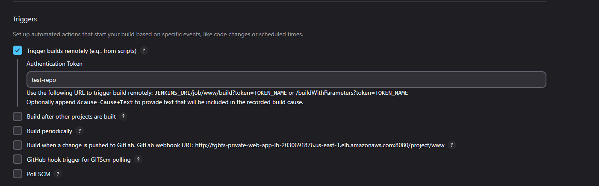

Day of Mustaches and Melody
CI/CD
Jenkins & GitHub Actions Integration
Freestyle Job in Jenkins
- Authentication Workaround GitHub removed basic authentication, so I created a fine‑grained Personal Access Token for the test repository and stored it securely as a Jenkins credential.
- Remote Build Trigger Each job is configured with a trigger token. Jenkins uses its API key and this token to authenticate and initiate builds remotely. 
- Secure Environment Injection
Under Build Environment, enable Use secret text(s) or file(s) to inject the GitHub PAT and any other sensitive credentials into the build.

- Build Steps A single Execute Shell step pulls the latest code and launches the application:
gh auth login --with-token < $GITHUB_PAT_TXT
cd github/test-repo
git checkout main
git pull origin main
. /home/ubuntu/miniconda3/etc/profile.d/conda.sh
conda activate web-app-env
pip install -r requirements.txt
python main.py
Triggering Jenkins from GitHub Actions
- Workflow Definition
A GitHub Actions workflow uses
curlwith Jenkins credentials to trigger the Jenkins job on each push tomainor via manual dispatch:
name: Trigger Jenkins Job
on:
push:
branches:
- main
workflow_dispatch:
jobs:
trigger-jenkins:
runs-on: ubuntu-latest
steps:
- name: Trigger Jenkins via cURL
run: |
curl -X POST \
-u "${{ secrets.JENKINS_USER }}:${{ secrets.JENKINS_API_KEY }}" \
"http://<jenkins-elb-dns>:8080/job/www/build?token=test-repo"
-
Jenkins URL Locate under Dashboard > Manage Jenkins > System > Jenkins URL.
-
Trigger Token Matches the token defined in the job’s Trigger builds remotely configuration.
Outcome: Commits to GitHub now automatically spin up Jenkins builds, and the Jenkins agents execute tasks securely within our AWS environment.
Feelin the Felt
Yale Billiards Session
Stroke Mechanics & Spin Control
I spent the evening honing my cue stroke and spin technique:
- Spin Application Adopting a lower stance made applying spin much smoother. While my accuracy wavered at first, my speed and cue control improved significantly.
- Elbow Positioning I noticed my arm wobbling on full strokes. Raising my elbow slightly and engaging only my pivot arm stabilized my motion.
-
8‑Ball Break Strategy Emulated Efren Reyes’ break:
-
Align close to the second diamond along the left rail.
- Strike the object ball just behind the head ball, causing a rebound into the rack.
- This method often sends the 8‑ball into a side pocket for an early win.
Practice Drill
- Rack up eight ball game in a standard triangle formation.
- Focus on any single ball(could be stripe, solid, or 8): line up, execute a smooth stroke, and observe shot placement.
- Repeat, adjusting body alignment and stroke speed for consistency.
Next Steps:
- Track pocketed balls and break patterns in a simple log to quantify improvement.
- Experiment with varying cue ball positions and break angles.
Why was the billiard instructor a great teacher?
He knew how to chalk it up to experience!